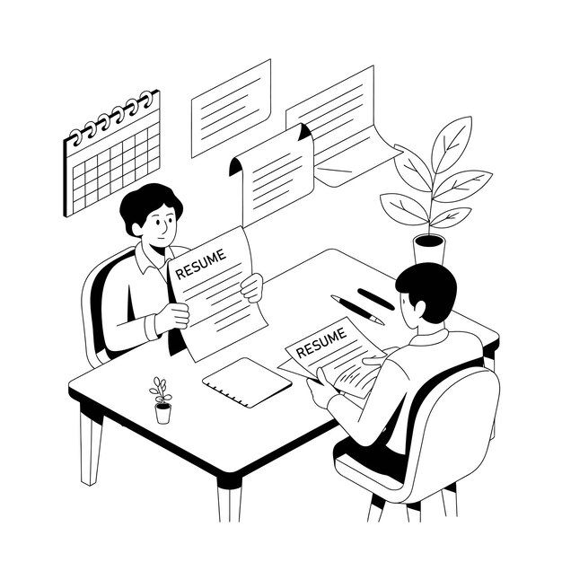
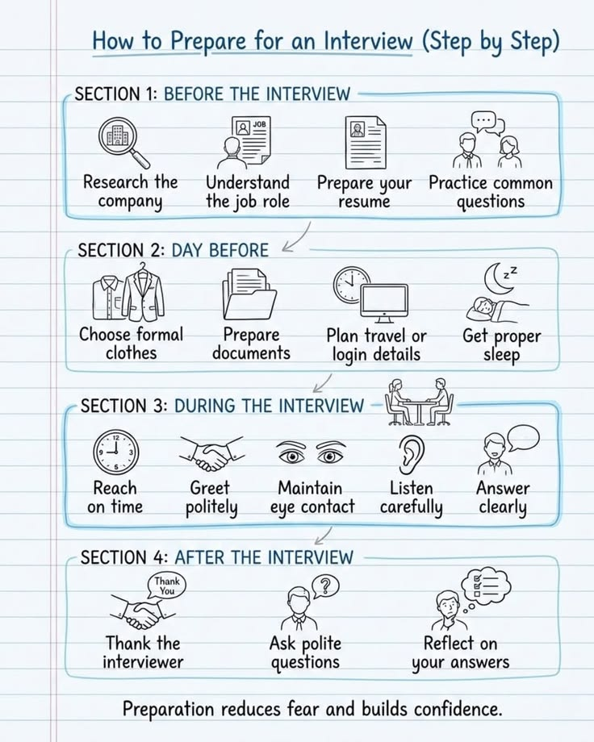

PROFESSIONAL SKILLS / SESSION 08
Interview Skills
Preparing to communicate with confidence in interviews.

Overview
Preparing to communicate with confidence in interviews.
Learning outcomes
- Prepare effectively for interviews.
- Demonstrate professional behaviour and communication.
- Answer interview questions with confidence.
Activities
Exploring mock interviews and approaches to answering interview questions confidently.
My reflection
This session introduced effective interview preparation techniques, professional behaviour, and communication skills. We explored mock interviews and how to answer interview questions confidently. It encouraged me to improve my confidence and prepare myself for future internship and job interviews.

